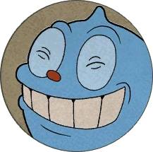

Goopy Le Grande
Goopy Le Grande is one of the first bosses in Cuphead. He appears in Ruse Of An Ooze from Inkwell Isle One.
Appearance
Goopy is a blue slime with a small red nose and a point on top. He is typically limbless, but his intro animation gives him an arm with a white glove on his hand. During Phase 2, Goopy grows twice his normal size and gains a pair of thick and brown eyebrows, with his arm now wearing a red boxing glove. In his final form, he manifests as an angry face on a grey headstone with a cross on top, displaying the term "RIP" (Rest In Peace). Goopy also has eyebrows in his tombstone's inscription.
Battle
Intro
As the battle begins deep inside the forest, Goopy tips his "hat" (actually his scalp) to Cuphead and Mugman.
Phase 1
 "With a face like mine is it a crime to be bouncing all the time?" —Goopy Le Grande, Phase 1 Death Screen Hitpoints = 440/288/336 Goopy's few attacks in this phase are relatively simple: Goopy simply bounces around the field, attempting to crush the player(s). Goopy stops bouncing, pulls most of his body back, then lunges at the player(s) while morphed into a giant boxing glove. Goopy's bounce can be avoided by moving around or dashing out of the way. He can also randomly take longer to bounce to mix up his rhythm. He has two type of jumps, one is lower and one is higher. When he hits the side of the screen while still ascending, he bounces off it and the arc continues in the opposite direction. When he hits the side while he is descending, he simply drops straight down, covering where dead spots in the corners would be if he always bounced off the side of the screen. In Simple mode, there is a longer delay between jumps, and he can only bounce with one jump pattern. In Expert mode, Goopy bounces much faster, with higher acceleration when jumping, and he falls faster as well. The range of his lunge is relatively short, so the player(s) can dodge it easily by running or dashing away. Crouching underneath the attack also dodges it, while giving the player(s) an opportunity to shoot him point blank. He also automatically changes directions depending on where the player(s) is, and continues bouncing where he is facing afterwards. The telegraph duration of him pulling back for his lunge increases and decreases in Simple and Expert mode respectively. After taking enough hits, Goopy will eventually stop and swallow a pill. He then grows twice as large as his original form. He spawns a trio of pink question marks while he transforms, which are crucial to getting an A-Rank or an S-Rank as they are the only objects in this boss battle that can be parried, and getting those ranks require you to parry at least three objects.
Phase 2
 "I'm a handsome slime bringing pain -- one bounce at a time!"
—Goopy Le Grande, Phase 2 Death Screen
Hitpoints = 560/540/560
In this phase, Goopy grows about twice as large after eating his pill[1] and gains some brown eyebrows.
His slam covers more ground. He reuses his two previous attacks, but they are more powerful and harder
to dodge to some extent:
Goopy still bounces around the field like before, but his larger size now makes him harder to dodge.
Goopy stops bouncing, dons a red boxing glove on his hand, pulls his arm back, and punches at the
player(s).
He takes slightly more time to bounce than he did his smaller form. In Simple mode, there are now two
different heights of jumps.
The range on his haymaker is longer than the one on his lunge. However, those punches are still
avoidable when the player far enough, and if there is no way to escape, it is ideal to just duck and
shoot at the same time. The first time he does this attack, he blinks a few times before the punch.
After taking enough damage, he will stop bouncing, dazed and is soon crushed by a headstone with his
face on it. On simple mode, the fight will end with him left feeling dizzy.
"I'm a handsome slime bringing pain -- one bounce at a time!"
—Goopy Le Grande, Phase 2 Death Screen
Hitpoints = 560/540/560
In this phase, Goopy grows about twice as large after eating his pill[1] and gains some brown eyebrows.
His slam covers more ground. He reuses his two previous attacks, but they are more powerful and harder
to dodge to some extent:
Goopy still bounces around the field like before, but his larger size now makes him harder to dodge.
Goopy stops bouncing, dons a red boxing glove on his hand, pulls his arm back, and punches at the
player(s).
He takes slightly more time to bounce than he did his smaller form. In Simple mode, there are now two
different heights of jumps.
The range on his haymaker is longer than the one on his lunge. However, those punches are still
avoidable when the player far enough, and if there is no way to escape, it is ideal to just duck and
shoot at the same time. The first time he does this attack, he blinks a few times before the punch.
After taking enough damage, he will stop bouncing, dazed and is soon crushed by a headstone with his
face on it. On simple mode, the fight will end with him left feeling dizzy.
Phase 3
"I'm a handsome slime bringing pain -- one bounce at a time!" —Goopy Le Grande, Phase 2 Death Screen Hitpoints = 560/540/560 In this phase, Goopy grows about twice as large after eating his pill[1] and gains some brown eyebrows. His slam covers more ground. He reuses his two previous attacks, but they are more powerful and harder to dodge to some extent: Goopy still bounces around the field like before, but his larger size now makes him harder to dodge. Goopy stops bouncing, dons a red boxing glove on his hand, pulls his arm back, and punches at the player(s). He takes slightly more time to bounce than he did his smaller form. In Simple mode, there are now two different heights of jumps. The range on his haymaker is longer than the one on his lunge. However, those punches are still avoidable when the player far enough, and if there is no way to escape, it is ideal to just duck and shoot at the same time. The first time he does this attack, he blinks a few times before the punch. After taking enough damage, he will stop bouncing, dazed and is soon crushed by a headstone with his face on it. On simple mode, the fight will end with him left feeling dizzy. Phase 3 GoopyIcon3 "I'm very smashing... even in grave situations!" —Goopy Le Grande, Phase 3 Death Screen Hitpoints = 372/504 In this form, Goopy only has one attack: Goopy brings his headstone down on the ground to try and crush the player(s). Goopy can only be damaged if the face of the headstone is shot. He can now only move by sliding from left to right, stopping momentarily to perform his slam, as he is in the background and unable to cause damage otherwise. Goopy usually goes by the players 2–3 times before going for the slam. In Expert mode, his headstone slides across faster, slams down faster, and is generally less predictable, sometimes slamming after just one passage. After taking enough damage, the headstone is torn in half and wiggles while Goopy's inscription appears deceased.
Credits for information and images: Cuphead Fandom Wiki